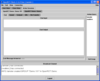

Active Sessions:
|
The “Active Sessions” view shows all the teams and/or groups that you have joined. The tab name of each session is comprised of the class name and the team or group name. Each team and group session will allow you to interact with your colleagues via the provided collaboration modules. On the right hand side of an active session view, you see a list of participating users. To disconnect from an active team or group session, click on the “Exit Team” or “Exit Group” button on the right hand side below the “Active User” list.
|